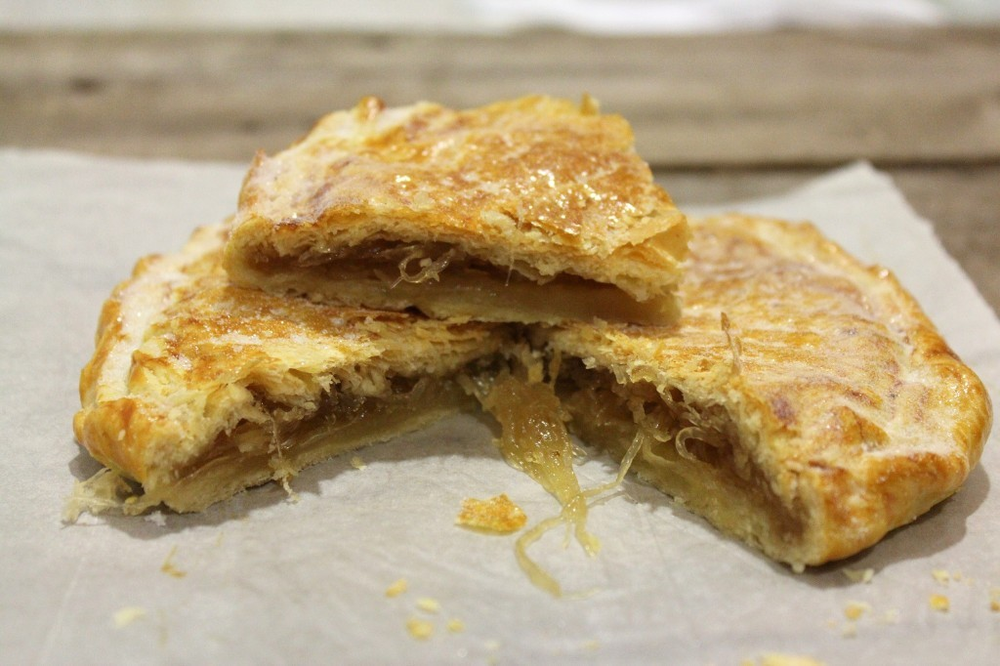

Receta 3
Ingredientes
- 2 láminas hojaldre 500 gr
- 350 g Cabello de angel
- Azúcar blanco
- Canela molida
Instrucciones
- Colocamos las planchas de hojaldre sobre la encimera. Con la ayuda del rodillo estiramos cada una de ellas intentado darles forma redonda.
- Ponemos un silpat o papel de horno sobre la bandeja de horno y ponemos una de las planchas de hojaldre sobre él.
- Repartimos el Cabello de Ángel sobre su superficie, dejando sin cubrir un par de centímetros del borde.
- Cubrimos con la otra plancha de hojaldre y unimos, envolviendo una plancha sobre la otra, los bordes.
- Pinchamos con un tenedor la superficie y esparcimos azúcar por encima.
- Introducimos la bandeja al horno y dejamos hacer durante 40 minutos a 170º.
- Sacamos, dejamos templar y esparcimos por encima azúcar y canela molida.
- En cuanto se enfríe el Pastel Cordobés, estará listo para su degustación.
Emplatado de la elaboración
